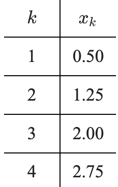

Show by division that \(\large \frac { x ^ { 2 } + 6 x + 9 } { x - 2 }\) equals \(x + 8 + \frac { 25 } { x - 2 }\).
Michelle has the problem \((2x+3)^2-3(2x+3)-10=0\) and is thinking of expanding the \((2x+3)\) terms and then solving. Laura suggests that she let \(a=2x+3\) then solve \(a^2-3a-10=0\). Use Laura’s suggestion to solve for \(a\) and then use your solutions to solve for the values of \(x\).
Write each rational expression as a single simplified fraction.
\(\frac{3}{x+3}\cdot\frac{5}{x-5}\)
\(\frac{x+y}{x}-\frac{x-y}{y}\)
\(\left( \frac { x } { y } - \frac { y } { x } \right) \left( \large\frac { x ^ { 2 } y ^ { 2 } } { x ^ { 2 } y - x y ^ { 2 } } \right)\)
Solve the system shown for \(x\) and \(y\) in terms of \(a\) and \(b\).
\(ax+y=7\)
\(3x-y=b\)
If a ball is thrown vertically upward with a velocity of \(32\) ft/s, its height after t seconds is given by the equation \(s(t)=32t-16t^2\). At what instant will the ball be at its highest point, and how high will it rise?
Solve each of the following equations by first expressing each side with the same base. Give exact answers using fractions, not decimals.
\(8^{(x+3)}=32\)
\(27^{2x}=\left(\frac{1}{9}\right)^{(x-1)}\)
\(\left(\frac{1}{125}\right)^{(2x-3)}=\frac{1}{25}\)
Use the table shown to write an equation for \(x_k\) in terms of \(k\).

The Monsters are going to visit relatives. They drive over many kinds of terrain ranging from the highway to gravel roads. They are able to drive \(40\) mph for \(2\) hours, \(60\) mph for another hour, and only \(20\) mph for the final \(30\) minutes of the trip. What was their average speed for the entire \(3.5\)-hour trip?